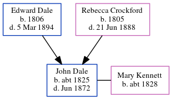

John Dale c1825 - 1872
[ Home ] | [ Calendar ] | [ Surnames Index ] | [ Errors ] | [ Family History ]The child of Edward Dale and Rebecca Crockford, John Dale, the three times great-uncle of Nigel Horne, was born in Harbledown, Kent, England c. 18251,2,3,4,5,6. He married Mary Kennett in Kent, England7. Like his father, he was an agricultural labourer.
During his life, he was living in Chartham, Kent, England in 18411 and in 18512; in Chartham Hatch, Kent, England on 30 Mar 18513 (the same place as his father had been living on 6 Jun 1841); and in Northgate, Canterbury, Kent in 18614 and in 18715.
He died in Jun 1872 in Canterbury, Kent, England6.
Parents
- Edward was born in 1806
- Rebecca was born in 1805
Citations
- 1841 England Census Online publication - Provo, UT, USA: The Generations Network, Inc., 2006.Original data - Census Returns of England and Wales, 1841. Kew, Surrey, England: The National Archives of the UK (TNA): Public Record Office (PRO), 1841. Data imaged from the National
- 1851 England Census Online publication - Provo, UT, USA: The Generations Network, Inc., 2005.Original data - Census Returns of England and Wales, 1851. Kew, Surrey, England: The National Archives of the UK (TNA): Public Record Office (PRO), 1851. Data imaged from the National
- 1851 England, Wales & Scotland Census - Findmypast (was age 26 and the son of the head of the household)
- 1861 England Census Online publication - Provo, UT, USA: The Generations Network, Inc., 2005.Original data - Census Returns of England and Wales, 1861. Kew, Surrey, England: The National Archives of the UK (TNA): Public Record Office (PRO), 1861. Data imaged from the National
- 1871 England Census Online publication - Provo, UT, USA: The Generations Network, Inc., 2004.Original data - Census Returns of England and Wales, 1871. Kew, Surrey, England: The National Archives of the UK (TNA): Public Record Office (PRO), 1871. Data imaged from the National
- England & Wales, FreeBMD Death Index: 1837-1915 Online publication - Provo, UT, USA: The Generations Network, Inc., 2006.Original data - General Register Office. England and Wales Civil Registration Indexes. London, England: General Register Office. © Crown copyright. Published by permission of the Cont
- England & Wales, FreeBMD Marriage Index: 1837-1915 Online publication - Provo, UT, USA: The Generations Network, Inc., 2006.Original data - General Register Office. England and Wales Civil Registration Indexes. London, England: General Register Office. © Crown copyright. Published by permission of the Cont
Family Tree
Map
Generated by ged2site. Last updated on Jul 3, 2024
Known Issues
May have been living with mother on 30 Mar 1851, but the addresses don't match or aren't detailed enough to be sure
May have been living with father on 30 Mar 1851, but the addresses don't match or aren't detailed enough to be sure